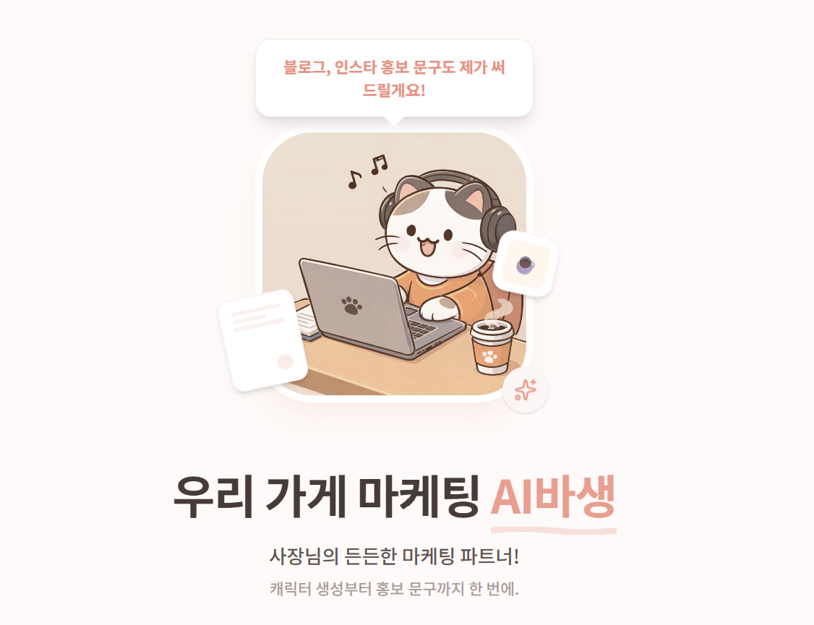

ABOUT THE MAKER
'우리 가게 마케팅 AI바생'을 만든 이유
AI바생은 단순한 글쓰기 툴이 아닙니다. 사장님이 하고 싶은 말을 실제 플랫폼용 홍보물로 바꾸고 등록까지 돕는, 든든한 알바생입니다.

MY VIEW
많은 사장님들이 알고 있습니다. 홍보를 해야 한다는 것.
하지만 현실은 다릅니다. 시간도 부족하고, 무엇을 써야 할지도 막막합니다.
그래서 만들었습니다. 내 가게를 마케팅해주는 ‘AI 알바생’을.
AI바생은 사장님의 말을 이해하고, 플랫폼에 맞게 글을 작성하고, 등록까지 대신 해주는 AI 마케팅 알바생입니다.
저는 콘텐츠 마케팅과 광고 운영을 경험하며 “좋은 글 하나가 매출을 바꾼다”는 걸 직접 체감했습니다.
하지만 대부분의 사장님은 그 글을 만들 시간도, 방법도 없습니다.
그래서 누구나 쉽게 사용할 수 있는 'AI 마케팅 도구'를 만들었습니다.